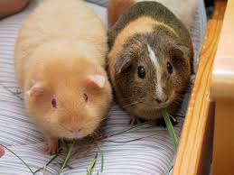

გოჭების შესახებ
ზღვის გოჭები პატარა, მეგობრული და საყვარელი ცხოველები არიან, რომლებიც ძალიან უყვართ მოფერება და თამაშები.
საყვარელი საკვები
- სალათის ფოთლები
- სტაფილო
- სვიტი პაპრიკა
გალერეა

ზღვის გოჭები პატარა, მეგობრული და საყვარელი ცხოველები არიან, რომლებიც ძალიან უყვართ მოფერება და თამაშები.